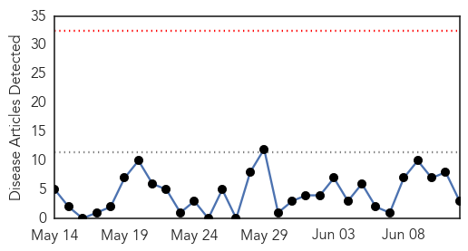
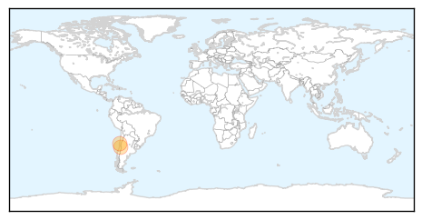
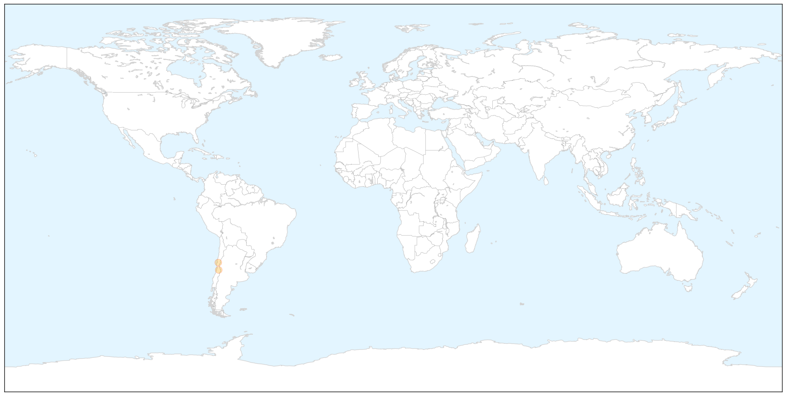
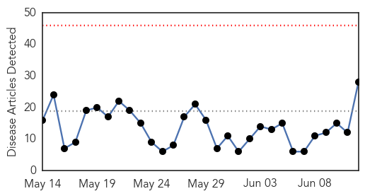
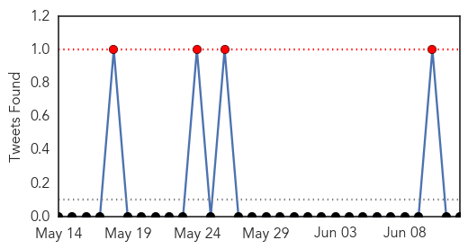
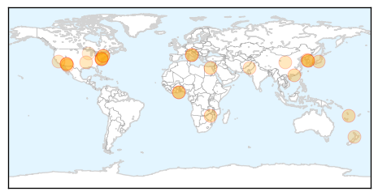
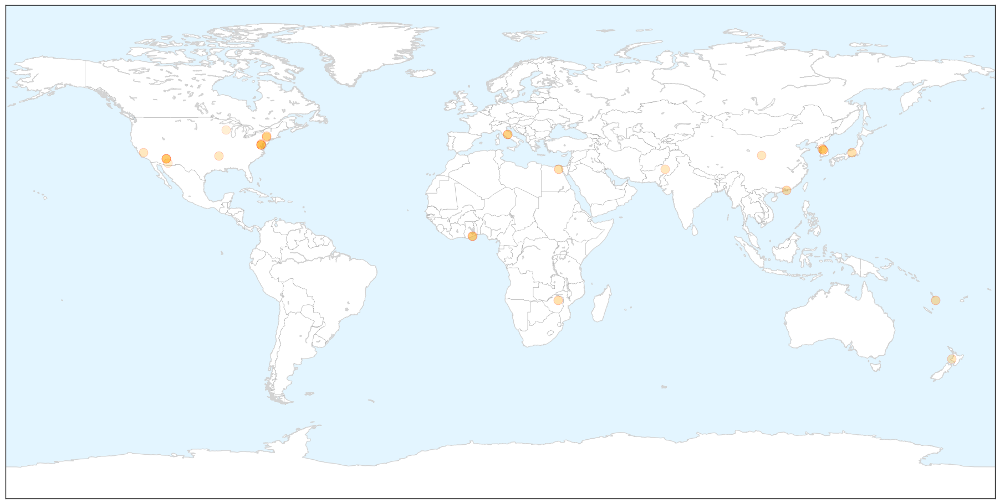
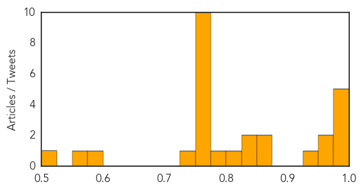

Measles
30-Day Web Trend
0 alerts, 0 warnings

30-Day Twitter Trend
1 alerts, 0 warnings

Article Locations

X

Article Confidences

Top Articles:
Top Tweets:
-
No tweets found for Jun 12, 2015
Influenza
30-Day Web Trend
0 alerts, 0 warnings

30-Day Twitter Trend
4 alerts, 0 warnings

Article Locations

X

Article Confidences
Top Articles:
- 1.000
- Intro to Global Studies
- 0.999
- Alarming surge of flu cases complicates Hong Kong's efforts to ensure against Mers outbreak
- 0.999
- Why is MERS so contagious?
- 0.993
- Disease Surveillance System Helps Detect Potential Outbreaks - Vanuatu
- 0.991
- Ghana Chicken Consumers Reassured After Bird Flu Outbreak
- 0.973
- Hong Kong reminded of SARS nightmare with jitters over MERS
- 0.967
- The Daily News of Newburyport: Lifestyles
- 0.939
- (LEAD) Acting PM stresses S. Korea fully capable of curbing MERS
- 0.862
- Bird flu in Arizona? 4 AZ facilities quarantined, egg prices on
- 0.852
- Ghana confirms bird flu
- 0.846
- 10 Persons Quarantined Over Bird Flu
- 0.841
- 10 Persons Quarantined Over Bird Flu – Daily Guide Ghana
- 0.805
- Possible bird flu identified in Pinal, Santa Cruz counties
- 0.799
- An appeal to Canterbury businesses with cooling towers
- 0.763
- Flu Panel Examines US Control Efforts, Impacts on Trade
- 0.751
- June 12, 2015 Archives
- 0.751
- June 11, 2015 Archives
- 0.751
- June 11, 2015 Archives
- 0.751
- June 11, 2015 Archives
- 0.751
- June 11, 2015 Archives
- 0.751
- June 11, 2015 Archives
- 0.751
- June 11, 2015 Archives
- 0.751
- June 11, 2015 Archives
- 0.751
- June 11, 2015 Archives
- 0.742
- Finance minister assures foreigners of MERS control
- 0.580
- State investigating 1st potential bird flu cases
- 0.554
- Pinal County site quarantined for possible bird flu
- 0.520
- Making the New Revolutions in Biology Safe
Top Tweets:
-
No tweets found for Jun 12, 2015